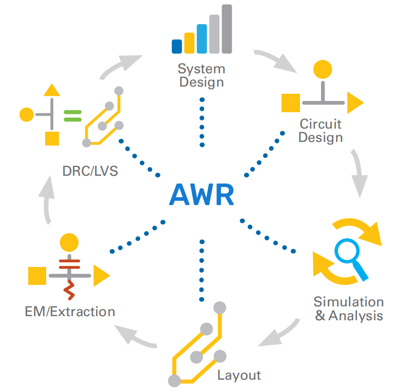
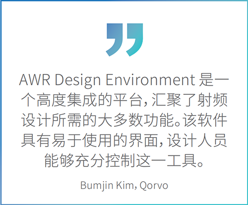
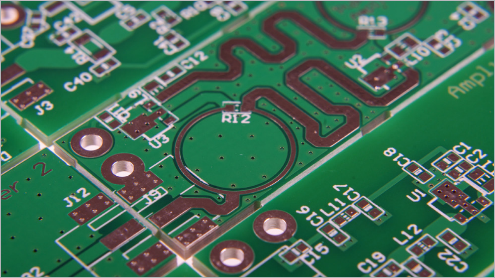

AWR Design Environment
射频/微波 EDA 软件套件
AWR Design Environment® 平台电子设计自动化 (EDA) 软件套件为射频/微波工程师提供了创新的高频电路、系统和电磁 (EM) 分析技术。现如今，微波和射频工程师可以使用这一强大的开放式平台设计基站、手机和卫星通信等各类无线产品。AWR Design Environment 软件的优点显而易见：直观的使用模型提供非凡的用户体验 (UX)，稳健的仿真技术有助于提升速度和准确性，开放式设计流程可为第三方工具提供数据导入/导出支持。
AWR 软件平台
AWR® 强大、创新的用户体验可以提供一个直观且功能齐全的环境，有助于释放工程生产力，助力工程师克服通信和雷达系统方面的设计挑战。稳健、先进的仿真技术支持精细的器件建模，以及用于指定设备要求的相同性能测量功能。这些技术可以提供快速、准确的结果，以及完全集成的系统、电路和电磁分析，用于在原型制造和测试之前准确预测或优化组件性能。设计流程自动化将仿真模型、第三方工具和布局几何与制造过程相结合，帮助设计人员从概念过渡到工程验收阶段。PCB、微波单片集成电路 (MMIC)、RFIC 和多芯片模块 (MCM) 的制造流程通过流程设计套件 (PDK)、向导/脚本和第三方解决方案提供支持。

产品优势
实现统一设计
通过动态链接的电气和布局设计输入，为 MMIC、RFIC、PCB 和模块工艺技术提供完整的物理设计流程。放置在电气原理图中的组件会根据标准和/或自定义组件库自动生成同步的物理布局，从而使设计能够以符合逻辑的简单方式从早期概念发展到最终布局阶段。
仿真与分析
软件集成了电路、系统和电磁仿真技术，帮助射频/微波电路设计人员根据系统链路预算制定组件规格，并通过通信标准的系统测试平台分析设备性能。可以研究线性和非线性（时域和频域）网络行为，并在单个环境中执行互连的原位电磁提取。
设计管理/流程
通过参数化子电路支持复杂的分层项目，以实现轻松优化和高级调谐功能。可以快速生成并重新使用电路、系统或基于电磁的子电路，以创建当今射频前端电路中常见的复杂网络。另外，设计流程考虑了传输线损耗、结构间电磁耦合以及阻抗不匹配的寄生效应。布局和物理设计可直接与 AWR AXIEM
® 三维平面和 AWRAnalyst™ 三维有限元法 (FEM) 电磁求解器配合使用，以便对无源芯片上和芯片外组件以及互连结构的电气性能进行特性分析。
互操作性与制造
支持第三方与行业标准工具的互操作性，交换设计数据以用于原理图/网表导入、双向电磁协同仿真、电气规则检查/设计规则检查/布局与原理图对比 (ERC/DRC/LVS)，以及可投入生产的 GDSII文件导出功能。强大的良率分析和优化功能可为稳健的设计提供支持。
脚本、自定义等
强大的应用程序编程接口 (API) 使用热门编程语言扩展了软件的功能，使用户能够创建用于自动执行常见或复杂任务的脚本。该平台还提供 PDK、由模型、布局单元和符号组成的自定义库，以及用于为特定代工厂工艺配置环境的其他信息。
AWR 设计环境
产品
► AWR Microwave Office® 是一款射频/微波电路设计软件，包括全面的元件库和集成的 AWR APLAC® 谐波平衡引擎，可用于非线性、频域和时域分析，以及数字调制设备的电路包络。
► AWR Visual System Simulator™ (VSS) 是一款通信和雷达系统设计软件，可通过射频前端/传播通道为基带的端到端仿真提供行为模型和分析，以开发系统架构、收发器和天线数组。
► AWR AXIEM 是一款三维平面电磁分析软件，可以提供快速求解器技术，轻松优化天线、无源结构、传输线以及射频PCB、模块、LTCC、MMIC 和 RFIC 上的大型平面设备并对之进行特性分析。
► AWR Analyst 是任意一款三维 FEM 电磁仿真软件，可快速、准确地分析非平面结构，例如喇叭天线和线天线、波导结构、谐振腔和组件外壳，以及常见或复杂的互连技术，例如焊线、球栅阵列和过孔。

应用和技术
微波组件
线性和非线性稳定性分析、阻抗匹配和滤波器综合等创新技术与增强电路包络、稳健的瞬态和谐波平衡仿真、负载牵引数据管理以及强大的测量绘图/可视化功能相结合，可加快前端组件设计和优化的速度。设计自动化、直观的界面以及脚本/自定义可为产品开发的所有阶段提供支持。与系统和电磁仿真器的协同仿真可提供原位寄生提取、设计验证功能和符合标准的通信测试平台。

MMIC/RFIC、模块和电路板
仿真技术、自动化和设计流程方面得到改善，支持高频电子设备的物理设计，提升速度和准确性，改善复杂工艺技术的设计管理，其中包括用于多芯片模块集成的混合技术设计。对从射频信号路径到数字控制和 DC 偏置线的 PCB 传输介质以及电路/系统和电磁协同仿真进行精确建模，对表面贴装元件、互连传输线以及嵌入式、分布式无源元件以及电磁验证进行完整的 PCB 分析，确保一次完成设计。
雷达和天线
电磁技术可模拟增益、回波损耗、辐射效率和电流等天线指标。借助相控阵列模型，天线阵规划人员可根据测量或模拟的辐射元素数据构建自定义配置，以研究波束转向，塑造主波束和旁瓣，并了解波束转向对驱动器输入阻抗的影响。设计自动化和仿真/模型技术可以准确表示信号生成、传输、相位阵列、T/R 切换、杂波、噪声、干扰和信号处理，使用户能够应对现代雷达系统的设计挑战。
无线通讯
仿真模型和波形结构支持采用最为流行的无线标准，包括DVB-H/DVB-T、WiMAX/802.16d-2004/802.16e-2005（移动和固定）、CDMA2000、GSM/EDGE, WLAN/802.11a/b/g 以及802.11ac，3G WCDMA FDD、IS95 等。新增功能包括用于全系统仿真的信号生成和解调，例如邻信道功率比 (ACPR)、误差矢量幅度 (EVM) 和误码率 (BER) 测量，可以支持带内/带间分量载波的载波聚合、组合分量载波的吞吐量测量以及 5G 候选调制波形。